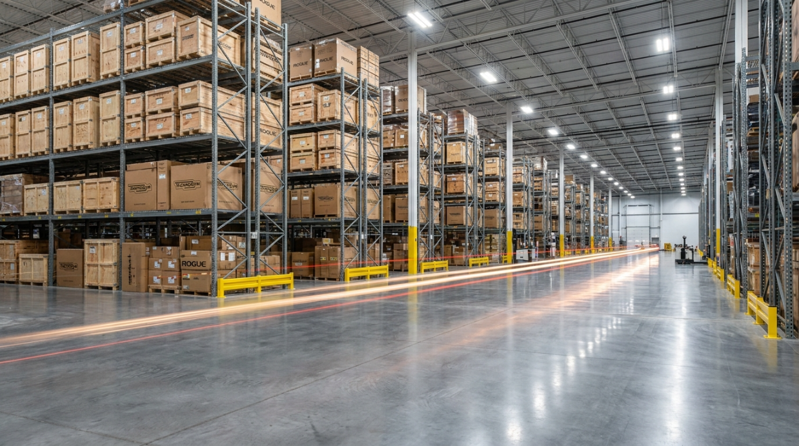

More than
equipment.
PT Fit Atlasia Anugerah bergerak di bidang distribusi dan konsultasi peralatan fitness impor, dengan fokus menyediakan solusi lengkap untuk gym, fitness center, hotel, apartemen, corporate gym, hingga fasilitas olahraga profesional.
The space
around the
workout.
Perkembangan industri kebugaran di Indonesia membuka peluang yang semakin besar. Fit Atlasia hadir untuk membantu pelaku usaha maupun institusi yang ingin membangun dan mengembangkan fasilitas fitness melalui kombinasi produk dan konsultasi.
Setiap project dipahami sebagai kebutuhan yang berbeda. Karena itu, proses dapat mencakup menentukan jenis peralatan yang sesuai, menyesuaikan kebutuhan dengan luas ruangan, merancang layout yang efektif, pengadaan, hingga instalasi.

Quality.
Precision.
Service.
The right solution
starts with the brief.
Understand
Memahami kebutuhan ruang, target pengguna, konsep fasilitas, dan tujuan project.
Select
Menentukan equipment yang relevan berdasarkan kebutuhan dan standar project.
Plan
Merancang dan menyesuaikan layout agar ruang efektif, nyaman, dan fungsional.
Deliver
Melakukan pengadaan, pengiriman, dan instalasi untuk membantu fasilitas siap digunakan.
Leading
fitness
distribution.
Visi kami adalah menjadi distributor alat fitness komersial terdepan di Indonesia dengan memberikan nilai lebih nyata melalui produk berstandar global dan layanan konsultasi terintegrasi.